Critical Point Problem
Definitions
Let $\{\tau_1, \tau_2, \dots, \tau_n\}$ be arbitrary distinct ordered nodes with $\tau_i \in [-1, 1]$.
Lagrange polynomial $L_i^n(t)$ associated with $\tau_i$
$$ L_i^n(t) = \prod_{\substack{j=1\\j\ne i}}^n \frac{t-\tau_j}{\tau_i-\tau_j}, \qquad i=1,\dots,n. $$For convenience, define $D_i^n = \prod_{\substack{j=1\\j\ne i}}^n (\tau_i-\tau_j)$.
Quadrature weight $\omega_i^n$ associated with $\tau_i$
$$ \omega_i^n = \int_{-1}^{1} L_i^n(t)\,dt, \qquad i=1,\dots,n. $$Normalized Lagrange polynomial $\tilde L_i^n(t)$
Throughout, we assume $\omega_i^n\ne0$ for all $i=1,\dots,n$, so that $\tilde L_i^n$ is well defined. (For arbitrary nodes the weights may be negative, but they must not vanish.)
$$ \tilde L_i^n(t) = \frac{L_i^n(t)}{\omega_i^n}, \qquad i=1,\dots,n. $$Cumulative Lagrange polynomial $G_i^n(t)$
$$ G_i^n(t)=\int_{-1}^{t}\tilde L_i^n(s)\,ds-\frac12, \qquad i=1,\dots,n. $$For the endpoint indices, define $G_0^n(t)=\frac12$ and $G_{n+1}^n(t)=-\frac12$.
Basis polynomial $F_i^n(t)$
$$ F_i^n(t)=G_i^n(t)-G_{i+1}^n(t), \qquad i=0,1,\dots,n. $$For $i=1,\dots,n-1$, the constants $-\frac12$ cancel, so
$$ \begin{aligned} F_i^n(t)&=\int_{-1}^{t}\frac{L_i^n(s)}{\omega_i^n}\,ds-\int_{-1}^{t}\frac{L_{i+1}^n(s)}{\omega_{i+1}^n}\,ds\\ &=\int_{-1}^{t}\left(\frac{L_i^n(s)}{\omega_i^n}-\frac{L_{i+1}^n(s)}{\omega_{i+1}^n}\right)ds, \qquad i=1,\dots,n-1. \end{aligned} $$For the endpoint indices,
$$ F_0^n(t)=1-\int_{-1}^{t}\tilde L_1^n(s)\,ds,\qquad F_n^n(t)=\int_{-1}^{t}\tilde L_n^n(s)\,ds. $$Critical points of $F_i^n(t)$ with the ordered nodes $\{\tau_1,\tau_2,\dots,\tau_n\}$
1) $i=1,\dots,n-1$
$$ \begin{aligned} \frac{d}{dt}F_i^n(t)=0 &\iff \frac{L_i^n(t)}{\omega_i^n}=\frac{L_{i+1}^n(t)}{\omega_{i+1}^n}\\ &\iff \prod_{\substack{j=1\\j\notin\{i,i+1\}}}^{n}(t-\tau_j)\left\{\alpha(t-\tau_{i+1})-\beta(t-\tau_i)\right\}=0, \end{aligned} $$where $\alpha=\frac{\omega_{i+1}^n}{D_i^n}$ and $\beta=\frac{\omega_i^n}{D_{i+1}^n}$.
If $\alpha\ne\beta$, the critical points are $t=\tau_k$ for $k\ne i,i+1$, or
$$ t=t^*:=\frac{\alpha\tau_{i+1}-\beta\tau_i}{\alpha-\beta}. $$2) $i=0,n$
$$ \frac{d}{dt}F_0^n(t)=-\tilde L_1^n(t)\quad\Rightarrow\quad t=\tau_2,\tau_3,\dots,\tau_n, $$ $$ \frac{d}{dt}F_n^n(t)=\tilde L_n^n(t)\quad\Rightarrow\quad t=\tau_1,\tau_2,\dots,\tau_{n-1}. $$There does not exist $t^*$ at the endpoint basis indices.
Special cases of $t^*$
1) $\alpha=\beta$
In this case,
$$ (\alpha-\beta)t=\alpha\tau_{i+1}-\beta\tau_i=\alpha(\tau_{i+1}-\tau_i)\ne0, $$so the linear equation determining the additional critical point has no real solution. Thus $F$ only has $n-2$ critical points.
2) $t^*=\tau_k$, $k\ne i$, $k\ne i+1$
In this case, $\frac{d}{dt}F$ has a double root at $\tau_k$.
Sign of $\frac{d^2}{dt^2}F_i^n(\tau_k)$, $k\ne i$, $k\ne i+1$
Assume $\omega_j^n>0$ for all $j=1,\dots,n$ throughout this section.
Consider
$$ \frac{d}{dt}\tilde L_i^n(t)=\frac{1}{\omega_i^nD_i^n}\frac{d}{dt}\left(\prod_{\substack{j=1\\j\ne i}}^n(t-\tau_j)\right). $$ $$ \frac{d}{dt}\tilde L_i^n(\tau_k)=\frac{1}{\omega_i^nD_i^n}\prod_{\substack{j=1\\j\ne i,k}}^n(\tau_k-\tau_j). $$Since the nodes are ordered, the sign of the product is determined by the number of negative terms. It is $n-k-1$ if $k<i$ and $n-k$ if $k>i+1$. The number of negative terms in $D_i^n$ is $n-i$.
Then the sign of $\frac{d}{dt}\tilde L_i^n(\tau_k)$ is determined by $2n-i-k-1$ or $2n-i-k$ negative terms with positive weights. Since $2n$ is always even, the sign is determined by $i$ and $k$.
Similarly, the sign of $\frac{d}{dt}\tilde L_{i+1}^n(\tau_k)$ is determined by $i$ and $k$ and is opposite to that of $\frac{d}{dt}\tilde L_i^n(\tau_k)$.
By the definition of $F_i^n$, the sign of $\frac{d^2}{dt^2}F_i^n(\tau_k)$, $k\ne i,k\ne i+1$, is as follows.
| Position of $k$ | $i+k$ | Sign of $\frac{d^2}{dt^2}F_i^n(\tau_k)$ |
|---|---|---|
| $k<i$ | even | $(-1)^{i+k+1}=-1$ |
| $k<i$ | odd | $(-1)^{i+k+1}=+1$ |
| $k>i+1$ | even | $(-1)^{i+k}=+1$ |
| $k>i+1$ | odd | $(-1)^{i+k}=-1$ |
Endpoint indices $i=0,n$
The endpoint definitions $G_0^n=\frac12$ and $G_{n+1}^n=-\frac12$ are constant. Hence
$$ (F_0^n)''(t)=-(\tilde L_1^n)'(t),\qquad (F_n^n)''(t)=(\tilde L_n^n)'(t). $$For $k=2,\dots,n$, the numerator of $(\tilde L_1^n)'(\tau_k)$ has $n-k$ negative factors, while $D_1^n$ has $n-1$. Since $\omega_1^n>0$,
$$ \operatorname{sgn}(F_0^n)''(\tau_k)=(-1)^k. $$For $k=1,\dots,n-1$, the numerator of $(\tilde L_n^n)'(\tau_k)$ has $n-k-1$ negative factors, while $D_n^n$ has none. Since $\omega_n^n>0$,
$$ \operatorname{sgn}(F_n^n)''(\tau_k)=(-1)^{n-k-1}=(-1)^{n+k+1}. $$Thus the table above also holds at $i=0$ (only $k>i+1$) and $i=n$ (only $k<i$). Together, it covers $i=0,\dots,n$ and the applicable node critical points.
Position of $t^*$
- $t^*$ is defined under $\omega \neq 0$
- $D_i^n \neq 0$ with the distinct node
- So, $\alpha \neq 0$ and $\beta \neq 0$
- $\alpha\beta=\frac{\omega_{i+1}^n}{D_i^n}\frac{\omega_i^n}{D_{i+1}^n}.$
$t^*$ divides the segment from $\tau_i$ to $\tau_{i+1}$ in the ratio $\alpha:-\beta$. We can consider 3 cases.
- $t^*$ lies on $\tau_i$ or $\tau_{i+1}$.
- $t^*$ is the internal division point of $\tau_i$ and $\tau_{i+1}$.
- $t^*$ is the external division point of $\tau_i$ and $\tau_{i+1}$.
1. $t^*$ lies on $\tau_i$ or $\tau_{i+1}$
Since $\alpha \neq 0$ and $\beta \neq 0$, this case is impossible.
2. $t^*$ is the internal division point of $\tau_i$ and $\tau_{i+1}$.
$$ \begin{aligned} &\iff \alpha(-\beta) > 0 \\ &\iff \alpha\beta < 0 \\ &\iff \omega_i^n \omega_{i+1}^n > 0 \qquad \because D_i^n D_{i+1}^n < 0 \\ &\iff \omega_i^n \text{ and } \omega_{i+1}^n \text{ have the same sign.} \end{aligned} $$3. $t^*$ is the external division point of $\tau_i$ and $\tau_{i+1}$.
$$ \begin{aligned} &\iff \alpha(-\beta) < 0 \\ &\iff \alpha\beta > 0 \\ &\iff \omega_i^n \omega_{i+1}^n < 0 \qquad \because D_i^n D_{i+1}^n < 0 \\ &\iff \omega_i^n \text{ and } \omega_{i+1}^n \text{ have different signs.} \\ &\Longrightarrow \exists\, \omega < 0 \end{aligned} $$useful facts
- Under the positive weights condition, $t^*$ is always the internal division point
- With distinct nodes, if $t^*$ is the external division point, then there exists a nonpositive weight.
New notation of $t^*$
Under the positive weight condition, $t^*$ is the internal point of $\tau_i$ and $\tau_{i+1}$. So from now on, we denote $t^*$ by $\tau_{i+0.5}$, because in many examples it is more understandable. It does not mean the geometrical midpoint of $\tau_i$ and $\tau_{i+1}$.
$t^*$ is the local maximizer
For $i=1,\dots,n-1$, assume that all quadrature weights are positive. By the interpolation property of the Lagrange polynomials,
$$ \frac{d}{dt}F_i^n(\tau_i)=\frac{1}{\omega_i^n}>0, \qquad \frac{d}{dt}F_i^n(\tau_{i+1})=-\frac{1}{\omega_{i+1}^n}<0. $$Since $t^*=\tau_{i+0.5}$ is the unique critical point in $(\tau_i,\tau_{i+1})$, the derivative changes from positive to negative at $t^*$. Therefore, $t^*$ is a local maximum point of $F_i^n$.
$t^*$ is not necessarily a global maximizer
Even if the nodes are symmetric about zero, include both endpoints, and have positive quadrature weights, $t^*$ need not be a global maximizer on $[-1,1]$.
For example, consider the six nodes
$$ (\tau_1,\dots,\tau_6)=\left(-1,-\frac12,-\frac15,\frac15,\frac12,1\right). $$Their quadrature weights are all positive:
$$ (\omega_1^6,\dots,\omega_6^6)=\left(\frac{17}{108},\frac{128}{189},\frac{125}{756},\frac{125}{756},\frac{128}{189},\frac{17}{108}\right). $$The corresponding basis polynomial is
$$ F_3^6(t)=-\frac{25}{8}(t^2-1)^2(8t^2+1). $$Its critical point between $\tau_3$ and $\tau_4$ is $t^*=0$, which is a local maximum. However,
$$ F_3^6(0)=-\frac{25}{8}<0=F_3^6(-1)=F_3^6(1). $$Thus $t^*$ is not a global maximizer on $[-1,1]$.
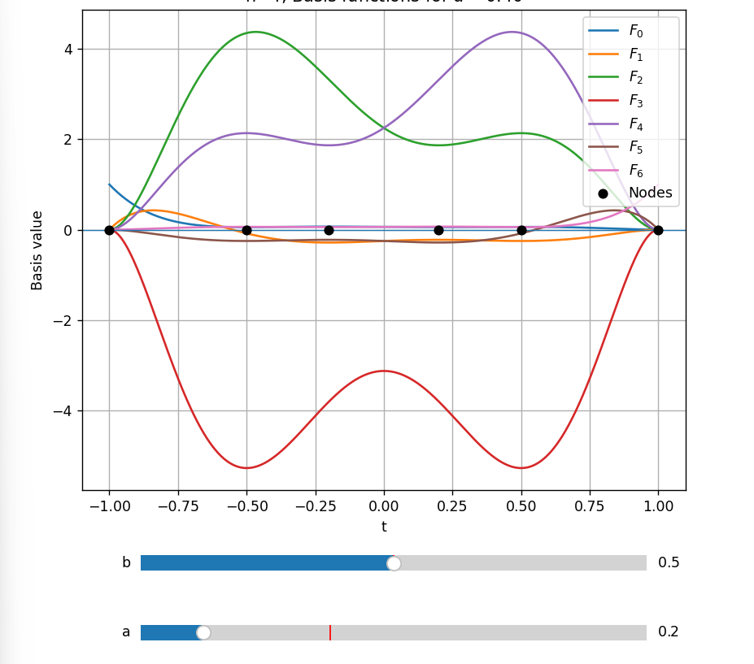
Minimize Variance Problem
Minimizing the variance of the maxima of F
We make the following assumptions.
- If the maxima of the basis functions are close to one another, the curve is more predictable.
- Likewise, the smaller the variance of the maxima, the more predictable the curve.
- If the maxima of the inner basis functions are close to one another, their minima are also close.
Definitions
Inner basis functions
We call $F_1^n, F_2^n, \dots, F_{n-1}^n$, i.e., the basis functions excluding the endpoint indices $i=0$ and $i=n$, the inner basis functions.
Maximum of a basis function
Let $\tau = (\tau_1, \dots, \tau_n)$ be a strictly increasing sequence of nodes.
For $i = 0, 1, \dots, n$, define the maximum of $F_i^n$ by
Average and variance of the maxima
Define the average $\bar{M}(\tau)$ and the variance $\operatorname{Var}(\tau)$ of the maxima of the inner basis functions by
$$ \bar M(\tau)=\frac{1}{n-1}\sum_{i=1}^{n-1}M_i^n(\tau),\qquad \operatorname{Var}(\tau)=\frac{1}{n-1}\sum_{i=1}^{n-1}\bigl(M_i^n(\tau)-\bar M(\tau)\bigr)^2 . $$탐색 방법
고려 사항
- 목적함수(분산)은 $\tau$에 따라 연속이지만 미분 불가능
- 즉, Gradient Descent 사용 어려움
- 분산을 하나 평가하는데 비용은 100ms 미만
후보1 : grid search
자유변수들의 격자점을 모두 탐색
- 장점:
- 국소최솟값 문제를 고민 안해도 됨
- 단점:
- 자유변수 개수 n에 따라 $(\text{격자 개수})^n$만큼 탐색하여 차수가 증가할수록 비용이 많이 듦
후보2 : compass search
노드를 자유변수 하나만 +h, -h 로 움직여 후보를 생성
자유 변수 n에 따라 총 2n개의 후보를 살펴보고 분산이 최소가 되는 노드로 이동
- 장점:
- 간단한 구현, 낮은 비용
- 단점:
- 대각선에 낮은 비용이 위치하는 경우, 놓칠 수 있음
후보3 : compass search with diagonal
compass search를 대각선을 포함하여 실행
자유 변수 n개에 따라 총 $3^n - 1$개의 후보를 살펴봄
- 장점:
- 간단한 구현
- 단점:
- compass search보다 비싼 비용
후보4 : Mesh Adaptive Direct Search
n차원 격자점의 집합(mesh)의 간격과 poll의 크기, mesh의 후보점들을 기준에 따라 정하여 탐색하는 방법
- 공부 더 필요함
Compass Search
- 차수 n, 탐색 간격 h, 종료 조건 h_limit, 초기 노드 initial node 를 입력
- 초기 노드의 분산을 계산
- 하나의 자유변수에 +h, -h 연산을 수행한 후보 노드에 대해 분산을 계산
- 3을 모든 자유변수에 대해 반복
- 초기 분산과 후보 분산들 중 최솟값 탐색
- 최솟값이 나오는 노드가 초기 노드일 경우, 탐색 간격을 10분의 1로 조정
- 최솟값이 나오는 노드가 탐색 노드일 경우, 해당 노드를 초기 노드로 설정
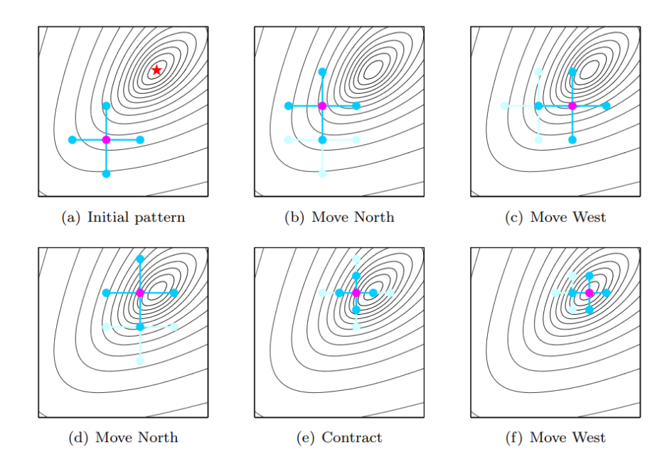
n = 4
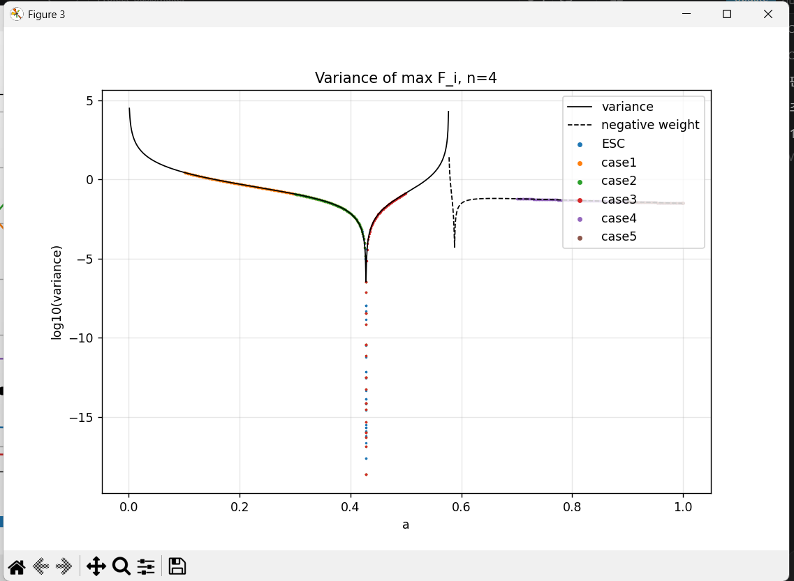
93 0.000000000100000 2.333690955214700e-19 [-1.00000000000000000000, -0.42818182699999973728, 0.42818182699999973728, 1.00000000000000000000]
[case3] a=0.42818183, sympy check: 2.333688426932632e-19n = 5
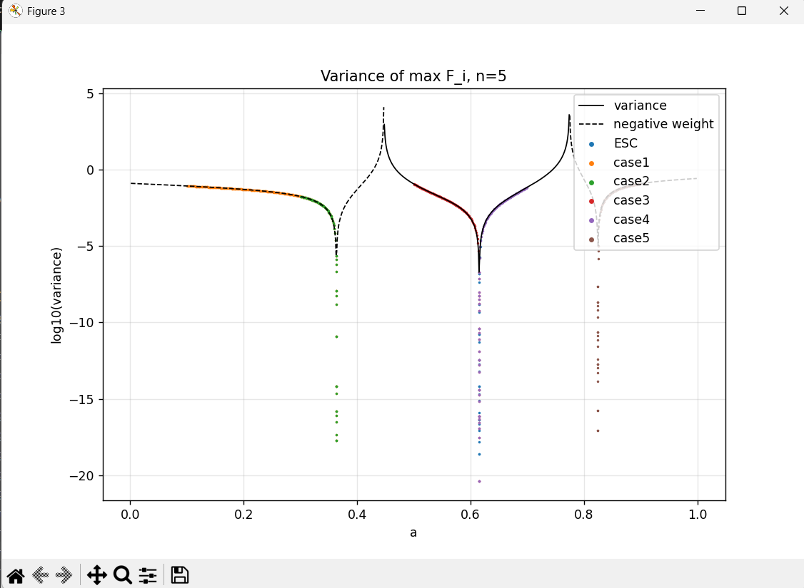
[ESC] a=0.61525633, sympy check: 2.467236153920099e-19
[case1] a=0.36343098, sympy check: 1.971465173421264e-18
[case2] a=0.36343098, sympy check: 1.971466108732261e-18
[case3] a=0.61525634, sympy check: 4.025324281057727e-21
[case4] a=0.61525634, sympy check: 4.025370066276577e-21
[case5] a=0.82468554, sympy check: 8.877902265598494e-18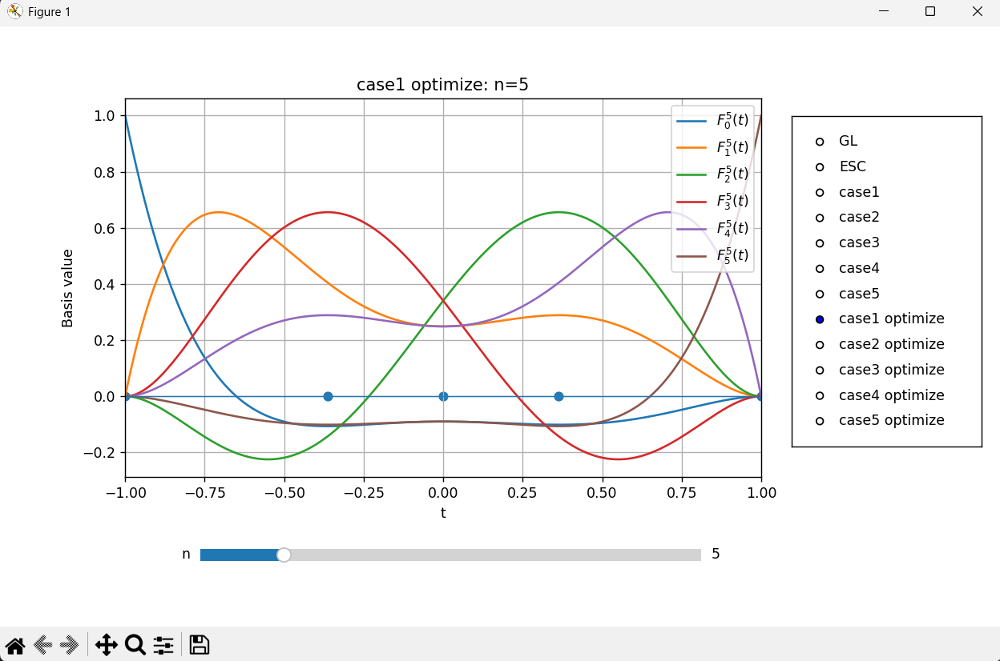
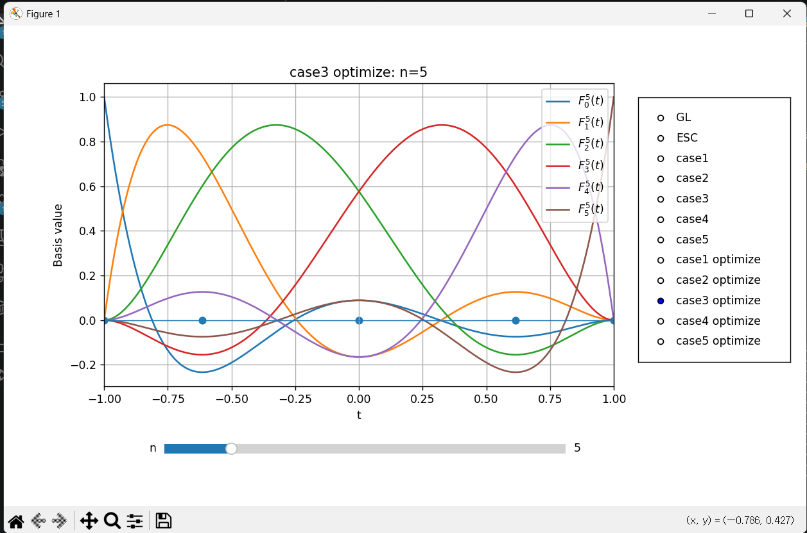
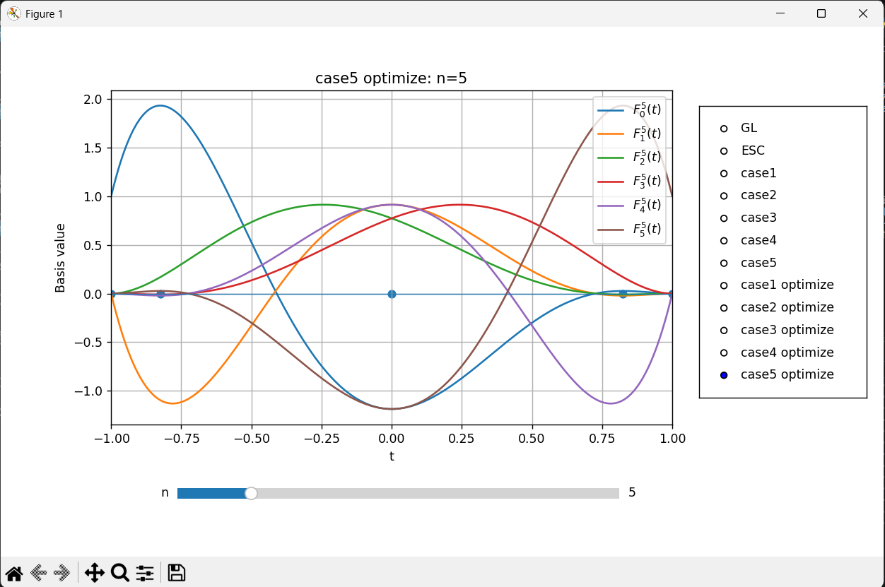
n = 6
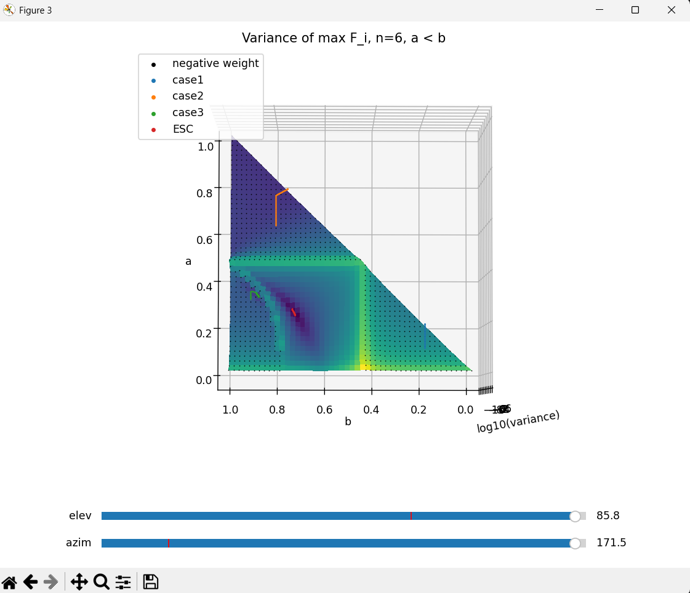
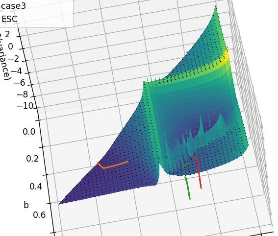
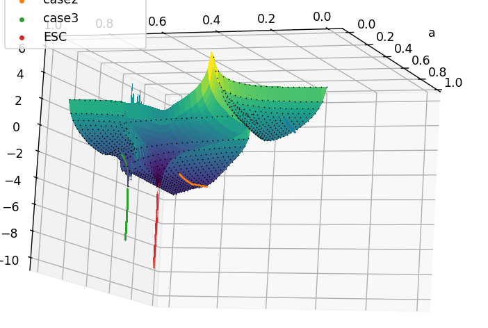
sympy check: 1.806596360179689e+00
sympy check: 1.356292541170561e-02
sympy check: 3.425611140052588e-08
sympy check: 1.591464508424902e-10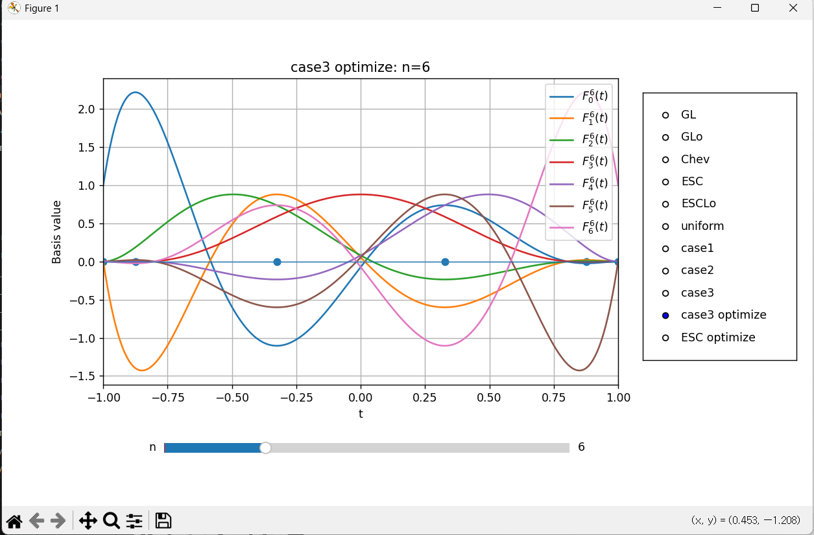
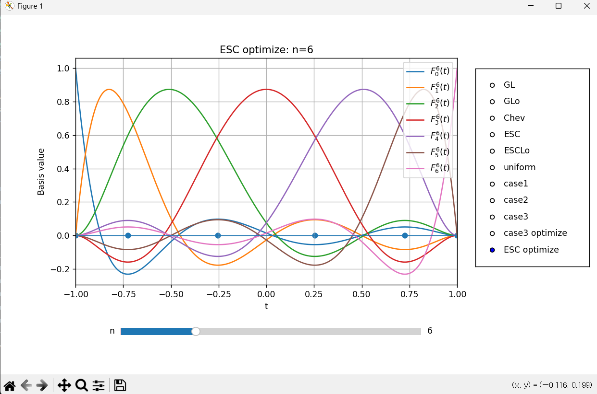
관찰 결과
분산의 국소 최솟값이 여러개 존재하더라도 전역 최솟값은 양수 영역에서 나타날 것이다.
→ n = 7 인 경우, 그렇지 않음이 나타남
→ 1. compass search의 한계로 인해 명제가 참이지만 그렇게 보이지 않음
→ 2. 전역 최솟값은 여러개 존재할 수 있음
그렇다면 새로운 추측
양수 가중치 영역에서 국소 최솟값은 하나이다?
고민
- 최댓값을 갖는 점이 여러개인 경우에는 어떤 점을 해당 $F_i^n$의 maximizer로 선택할 것인가 → 근데 이걸 고민해야 되나?
- 가중치가 양수임을 가정하면 내분점임을 보장할 수 있지만, 내분점과 외분점으로는 가중치를 보장할 수 없음. → 이걸 잘 알아보면 양수 가중치 조건을 찾는데 도움이 될지도